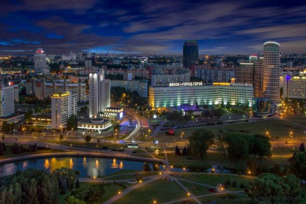

Столица Беларуси
Минск
Столица Беларуси
Город Минск – столица Беларуси, политический, экономический, научный и культурный центр страны. Минск – наиболее экономически развитый город Беларуси. В Минске проживает 2 млн 20,6 тыс. человек (на 1 января 2020 г.), и численность населения постоянно увеличивается.
Расположение города Минска
Минск расположен на юго-восточном склоне Минской возвышенности, имеющей моренное происхождение. Она образовалась во время Сожского оледенения, последнего, достигшего этой территории. Средняя высота над уровнем моря 220 м.
Минск-город герой

©Kalchevskiy Daniil
Ссылка на первую страницу>